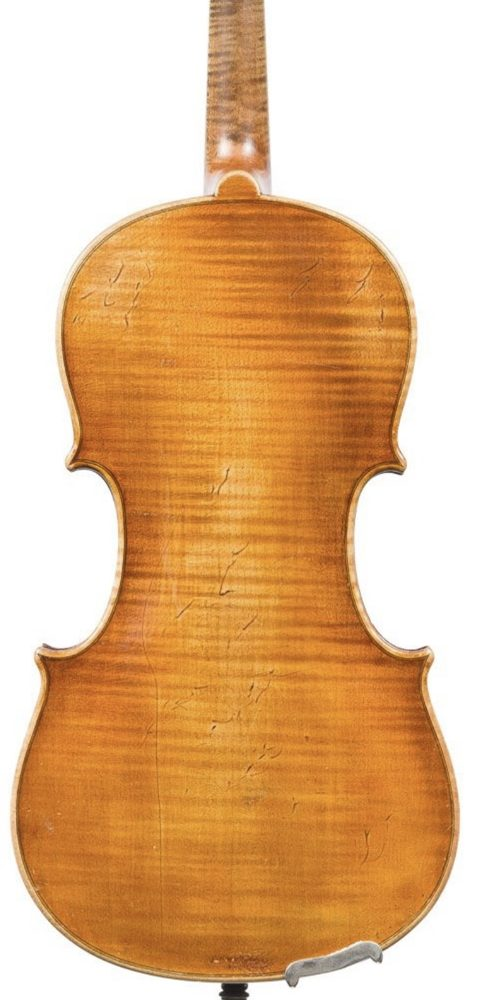

Erlesene Dreiviertel-Geigen und -Celli für Kinder, die schon jetzt bereit sind für Wettbewerb und Bühne, bevor sie in ein Instrument in voller Größe hineinwachsen.
Für talentierte junge Musiker:innen kommt der Wechsel zu einem hochwertigen Instrument oft früher als der Wechsel zur vollen Größe. Genau für diese Phase gibt es uns.
Ausgewählte Dreiviertel-Geigen und -Celli, teils historisch, aus der Zeit um 1900, mit einem Klangcharakter, den Schülerinstrumente nicht bieten.
Mehr Projektion, feinere Ansprache und größere dynamische Möglichkeiten. Entscheidend bei Auftritten mit Orchester oder Klavier und bei anspruchsvollem Repertoire.
Ein Instrument auf hohem Niveau, das die spätere 4/4-Größe nicht ersetzt, sondern den Weg dorthin begleitet, ohne musikalische Kompromisse.
Eine junge Geigerin oder ein junger Cellist steht vielleicht schon auf der Konzertbühne, bereitet sich auf Wettbewerbe und Aufnahmeprüfungen vor, während der Körper noch am besten zu einem Dreiviertel-Instrument passt. Genau dafür ist unser Sortiment gedacht.
Zum Sortiment
Platzhaltertext: Freundliche Aufforderung, Kontakt aufzunehmen, für eine Beratung, ein Probespiel oder eine Anfrage zu einem bestimmten Instrument.